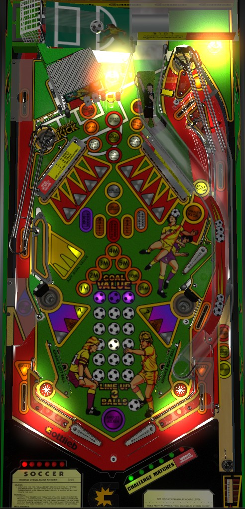

Not to be confused with World Cup Soccer/World Champion Soccer (Bally Williams, 1994), which prominently features Striker the World Cup Pup and is often referred to by the community as "doggy soccer" (e.g.).
The vast majority of World Challenge Soccer's points are found in its multiball and Riot mode. Multiball is earned by completing the Multi and Ball modes at the drop targets, from Player's Choice via spelling Soccer at the top left and top right saucers, or as a Mystery award. In multiball, complete drop targets to light jackpots at the Goal and the ramp. To reach Riot mode, either score 50 Goals or complete the World Challenge by winning 6 Challenges, which are started by spelling Challenge at the targets in front of the Goal. In Riot, the Goal, center target, and ramp score 30,000,000 (if you started it with 6 Challenges) or 100,000,000 (if you started it from 50 Goals) per shot.
The below picture of World Challenge Soccer's playfield was taken from the VPX recreation by Fredobiwan.

World Challenge Soccer has two flavors of skill shot: a timing skill shot and a precise power skill shot.
For the timing skill shot, one of three awards will be lit in the shooter lane, with the lit award rotating rapidly. Full plunging the ball into the top right saucer gives whichever award was lit when the ball settles in the saucer. These awards can be:
The precise power skill shot is to plunge the ball into the rollover lane just below the top right saucer. Doing this scores 3 Goals and opens the Goal shot so that another Goal can be scored.
A shot that is too weak to reach the top right saucer or rollover lane will be fed toward the in/out lane entrance (usually the in lane, but not always). There's no incentive for doing this. Skill shots cannot be earned when a ball is being plunged to start any multiball.
Complete all of the drop targets in both banks to start the currently flashing mode. You can also start the flashing mode from the precise power skill shot. The flashing mode can be changed before the plunge using the flippers; otherwise, it changes when a slingshot is hit during gameplay. Modes are timed in "long seconds", where 1 "long second" according to the game is equal to about 2 seconds of real time.
If you have made progress toward starting a drop target mode but activate another feature in the meantime such as Center Target Round or any Multiball, the drop targets will reset when that feature ends, and you'll need to start from scratch hitting all 10 of them to start the next mode.
If all 5 modes have been completed, knocking down all 10 drop targets an additional time will light the lower saucer(s) for Challenge- both saucers will be lit, unless Multiball is also currently qualified, in which case one saucer will remain lit for Multiball and the other will light for Challenge, alternating on slingshot hits. If all 5 modes are completed and Challenge is ready, the game will repeatedly reset only the highest drop target in each bank (#5 on the left, #1 on the right) and knocking either one down scores 5,000,000 points. Failing a Challenge or completing the World Championship to reach Riot Multiball causes the progress on the drop target modes to reset, requiring you to complete all 5 again to have another chance to relight Challenge. Challenges are explained in more detail later in the guide.
A Goal is scored by shooting the Goal shot when the goalkeeper standup targets are raised out of the way, or by Mystery awards, the precise power skill shot, or the left jackpot during Multiball. To open the Goal, shoot the upper left saucer, hit the Penalty Kick target at the right shot, or (once per ball) press both flippers at the same time. One Goal scores the Goal Value displayed on the playfield. The Goal Value starts each ball at 1,000,000 points and can be advanced in the sequence 2,000,000, then 3,000,000, then 4,000,000, then 5,000,000, then 10,000,000, then 25,000,000. Making the Advance Goal Value skill shot increases the Goal Value by 3 steps. You can also advance the Goal Value either via a Mystery award, or by shooting whichever standup target is lit yellow (can be one of the three left targets or the center target, and rotates based on hits to the slingshots or the wall switches behind the drop targets). Scoring 20 Goals in a game awards an instant extra ball. Scoring 50 Goals in a game guarantees that the next Mystery award is Super Riot, a 3-ball multiball where the Goal shot, center target, and ramp all score a repeatable 100,000,000 points. The maximum Goals you can score is 99; after that, anything that would award a Goal will still give you the Goal Value points, but the count cannot be incremented any further.
The ramp is lit for Spell World anytime during single ball play unless a Challenge is running. Make a full shot up the ramp to earn a letter in World. If a drop target mode or the Center Target Round itself is already running, you'll be able to get the first 4 letters in World, but you won'y be allowed to complete World until there is no mode in progress. The ramp is a flip ramp that is far away from the flippers, so it may not be extremely viable if the flippers are weak, and missed shots can be at high risk of a center drain. Spelling World starts the Center Target Round, where for 20 long seconds, every shot to the center standup target between the Goal and the ramp scores 10,000,000 points. This is not particularly good value given the risk the center target poses, and Center Target Round blocks off progress toward drop target modes and the ability to start Multiball or Challenges, so this feature should be ignored or timed out whenever possible unless you are very close to reaching a target score.
A Challenge Match can be lit in two ways:
When a Challenge is started, the goalkeeper targets will be raised out of the way, and you have 12 long seconds to shoot the Goal once. Doing so successfully scores 20,000,000 points and ends the Challenge. If you succeeded in shooting the Goal, the saucers will be lit for another Challenge immediately. If you did not shoot the Goal in time or drained, all CHALLENGE letters and mode progress is lost and you must requalify a Challenge from scratch.
The number of completed Challenges is shown on the apron. Under default settings, this Challenge progress is a carryover award that is held in memory from ball to ball, player to player, and game to game. Under tournament settings, each player is reset to having 3 completed Challenges at the start of each ball. After completing 5 Challenges, the 6th Challenge is World Championship. This is a multiball where the objective is to shoot the Goal shot 3 times. Always full plunge at the start of multiball, so that ball #2 lands in the top right saucer and you get to play with a 3rd ball; if you short plunge, the World Championship wil only have 2 balls. If you succeed at socring 3 Goals before multiball ends, you score 50,000,000 points and the World Championship is upgraded into Riot Multiball, where any shot to the Goal, the center target, or the ramp scores 30,000,000 points as long as their is more than one ball in play. If you do not shoot the Goal 3 times before single ball play resumes, you will once again need to requalify a Challenge from scratch. Playing Riot Multiball also resets your progress through the drop target modes.
Letters in SOCCER can be earned by shooting either upper saucer.
The upper left saucer cannot be shot directly, and is accessed via ricochets off the Goal, the center target, or occasionally the right drop targets.
The upper right saucer is accessed via the far right shot that goes in front of the upper flipper. The saucer can only be reached if the Penalty Kick drop target is not raised; see Penalty Kicks section below.
Spelling Soccer immediately grants Player's Choice, which is always the same two options: 8 Goals on the left flipper, or Multiball on the right flipper. Multiball is often the better choice, unless the Goal Value is very high and you only need a few tens or millions of points to reach your target.
Multiball is qualified by either a Mystery award, earning both Multi and Ball from the drop target modes, or as the right option in Player's Choice. Like World Championship, Multiball is technically a 2-ball round by default, but as long as you did not start Multiball from a Mystery or Player's Choice award at the top right saucer, you can add a 3rd ball to Multiball by plunging the 2nd ball into the top right saucer.
Jackpots are lit during Multiball by completing both banks of drop targets. When Multiball is starting, making the precise power skill shot into the top right rollover lane will complete all of the targets instantly and light the first Jackpot for you. When Jackpot is lit, you must choose between the left Jackpot at the Goal shot or the right Jackpot at the ramp.
The first left Jackpot on a ball scores 10 Goals, and subsequent jackpots each award 10 more Goals than the previous. Due to a bug, the dot display shows the tens digit of the Goals jackpot in hexadecimal, which causes visual errors if you earn more than 9 left jackpots; 100 Goals is displayed as A0, 150 Goals is displayed as F0, and 160 Goals is displayed as 100, but the score is counted correctly.
The first right Jackpot awards 30,000,000 points and the second awards 100,000,000. After 2 right jackpots have been scored in one ball: all right jackpots score 300,000,000, left jackpots can no longer be scored, and the ramp does not unlight when a jackpot is made, meaning the 300,000,000 is repeatable.
If Multiball is played multiple times in one ball, the value and progress on the jackpots will carry over across those multiballs, but the jackpot values are reset each time a new ball in play begins.
If you intend to play Multiball, try to increase the Goal Value before starting Multiball; the Goal Value cannot be increased during Multiball itself. It is generally advised to avoid the right jackpots altogether and only earn left jackpots at the Goal, since they scale up indefinitely and can be worth much more than 300,000,000 points. There is no ball save of any kind at the beginning of Multiball, nor is there a quick restart available if Multiball ends before any Jackpot(s) is/are scored.
The 3x6 grid of soccer ball inserts shown between the slingshots is the Line em Up feature. When no mode or multiball is running, one soccer ball in each column is lit. Shooting the Goal, the goalkeeper targets, or hitting the left slingshot moves the left ball up one position. Hitting the center target moves the center ball up one position. Shooting the ramp or hitting the right slingshot moves the right ball up one position.
When the three soccer balls make a horizontal line in one of the white rows, Superscore is lit at the center target. The first Superscore in a game scores 10,000,000 points, the second scores 20,000,000, and all further Superscores are worth 40,000,000. When Superscore is lit, shots to the center target do not advance the center ball. Superscore is unlit as soon as the three balls are no longer in line.
When the three soccer balls make a horizontal line on the top (purple) row, Extra Ball is lit at the left rollover, which is triggered by shooting the Goal (not just the goalkeeper targets) or the upper left saucer. The extra ball is lit for about 20 seconds and remains lit even if the three soccer balls are no longer lined up for any reason.
Hitting the goalkeeper targets or shooting the Goal itself qualifies Penalty Kick, and raises the drop target at the end of the right shot. Knocking down this drop target opens the Goal, but the Goal will close when another switch is scored. In practice, this feature largely just serves to prevent the upper right saucer from being used to earn Soccer letters.
When neither Multiball nor a Challenge is qualified, one of the two lower saucers will be lit for Mystery, alternating based on slingshot hits. Possible awards from Mystery include:
This list may not be exhaustive. World Challenge Soccer does not seem to have a Double Your Score feature, nor a Catch-up feature in multiplayer games.
If you spell Soccer while 5 Challenges have been completed and World Championship is lit, be sure not to take Multiball from Player's Choice. If you do, the game will enter a glitched state when the multiball ends. Playing a regular Multiball while World Championship is lit will cause the game to forget that the currently qualified challenge should be World Championship, and instead you'll just get a 6th normal Challenge, which is normally impossible. Completing this unintended 6th Challenge scores 20,000,000 points and instantly starts World Championship, but with only 1 ball in play. This single-ball World Championship cannot be completed, even if you score 3 Goals; the music will cut out after 3 Goals, but the only way to exit the round and regain access to any other scoring features is to drain the ball. On your next ball, the Challenge progress will be reset since you technically completed a 6th Challenge, meaning you have lost out on a chance to play Riot Multiball, which is a potential loss of hundreds of millions or possibly over a billion points. To avoid this bug, be sure not to start Multiball from Player's Choice while World Championship is lit at the lower saucers. I have not yet tested whether this bug if Multiball is earned from a Mystery award while World Championship is lit; the only way to do this would be to receive Instant Multiball from the Mystery award of a skill shot after World Championship was qualified on a previous ball.
World Challenge Soccer has a conventional in/out lane setup, but the in lanes are slanted slightly outward. The feed following a Goal, an upper left saucer shot, or a very short plunge will be directed toward the in lane, but the angle at which the in and out lanes meet may cause a ball to rattle into the out lane after a made shot. The in lanes have a slightly zigzag shape to slow the ball down and prevent shatz/alley passes. There is a center post between the flippers. The out lanes always score 1 Goal, unless you are maxed out at 99.
From the start of the game, the end of ball bonus is 1,000,000 points for each letter you have earned in World, Challenge, and Soccer. When you complete any word, it is held in memory as a completion for the purposes of the end of ball bonus. When all 3 words have been completed, the end of ball bonus is increased to 100,000,000 points for that ball, then it will reset back to being your currently collected letters for the next ball's bonus (unless you complete a word again, etc.). There is no way to multiply the end of ball bonus or collect it mid-ball.
Like many 90s Gottlieb games, a "reduced scoring mode" is present, which lowers the point value of some major awards to adjust the game's balance. Reduced scoring mode has significantly less impact on game strategy on World Challenge Soccer than it does in many other Gottlieb games. When reduced scoring mode is active, the following changes are observed:
In novelty play, extra balls score 20,000,000 points and Specials score 50,000,000.
| If you need... | Try... |
| 10,000,000 points | ...scoring a couple Goals or starting any mode (drop target modes or center target round). |
| 30,000,000 points | ...starting Multiball, winning a Challenge, or starting Points Round from the drop targets. |
| 100,000,000 points | ...focusing on Points Round, or raising the Goal Value so that you can play multiball and focus on left jackpots at the Goal. |
| 300,000,000 points | ...playing Multiball as frequently as possible, or reaching World Championship so that you can play a Riot Multiball. |
| 1,000,000,000 points or more | ...playing Multiball after building the Goal Value up to its maximum of 25,000,000 points, or focusing on Goals outright to reach 50 and play a Super Riot Multiball. |